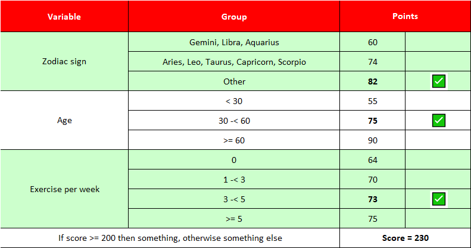

Theory
Overview
Binary classification is the task of classifying the elements of a set into two groups.
It is a type of supervised learning, a method of machine learning where the categories are predefined, and is used to categorize new probabilistic observations into said categories.
So, in summary, we only have to decide to which group each element of a set will belong to, given another set of similar elements where each of them is already assigned to one of these two groups. Actually, the best thing would be to estimate the probability of belonging to each group for each element, and that is exactly what several machine learning algorithms do.
However, the interpretability of these algorithms to determine what makes each element belong to a particular group is not always very clear. For example, if we use a sophisticated algorithm such as Gradient Boosting, then we may not be able to fully understand what it is doing to assign each element to a group. This is sometimes known as a black-box model behavior where there may be hundreds or even thousands of variables involved that are combined in different ways.
A scorecard is a machine learning model for solving binary classification problems with full interpretability. It usually has a reduced number of variables (far from the hundreds or thousands that we mentioned before) where each of them has been previously grouped.
It usually looks something like this:

The two key points of a scorecard can be seen in this easy example:
-
Each variable, regardless of whether it is numerical or categorical, has been discretized into groups. These groupings can be done automatically (using different approaches) or manually where the model developer decides in an expert way how these groupings should be.
-
The score associated with each element, which is nothing more than the probability of belonging to one of the groups (as we will explain), is fully interpretable and traceable.
Theoretical disclaimer
Before moving on to the perhaps complicated theoretical part I want to point out that the best way to learn how to use this library is by using the example notebooks.
For a deep understanding of the logic that Pyken follows in its scorecard generation process it is recommended to read the following sections, but I emphasize that it is not necessary to use it.
Details of the many features of the autoscorecard class can be found in the last chapter.